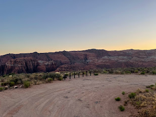
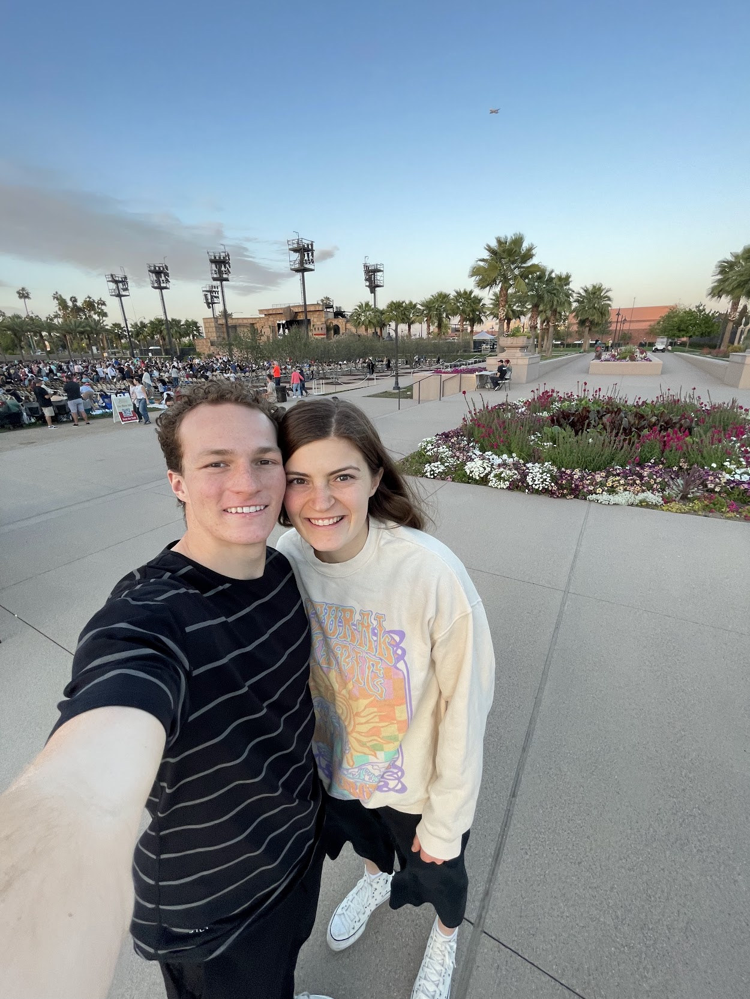

The Best Vacation
Our favorite vacation we have been on is probably still our honeymoon. After our wedding we drove striaght to St George where we stayed for a few days. We stayed in a LaQuinta just outside St George. It was in a quiet place which was perfect!
One of our favorite parts about St George was the good food! Because we were both familiar with the city, we knew some good places to eat. We enjoyed taking our food to this beautiful lookout over Snow Canyon and eating it in the bed of our rental truck.
New Tradition
Our most recent trip was one of our favorites! Over Easter weekend we visited Cherish's parents' friends from dental school in Peoria Arizona. We had a lot of fun with their family and enjoyed great weather! The highlight of the trip was when we went to the Easter Pageant at the Mesa Temple! It is the largest Easter Pageant in the United States and we could tell why! The spirit was very strong as we watched this portrayl of the Savior's life and mission. After the trip was over we figured we may need to make this trip an Easter tradition.
